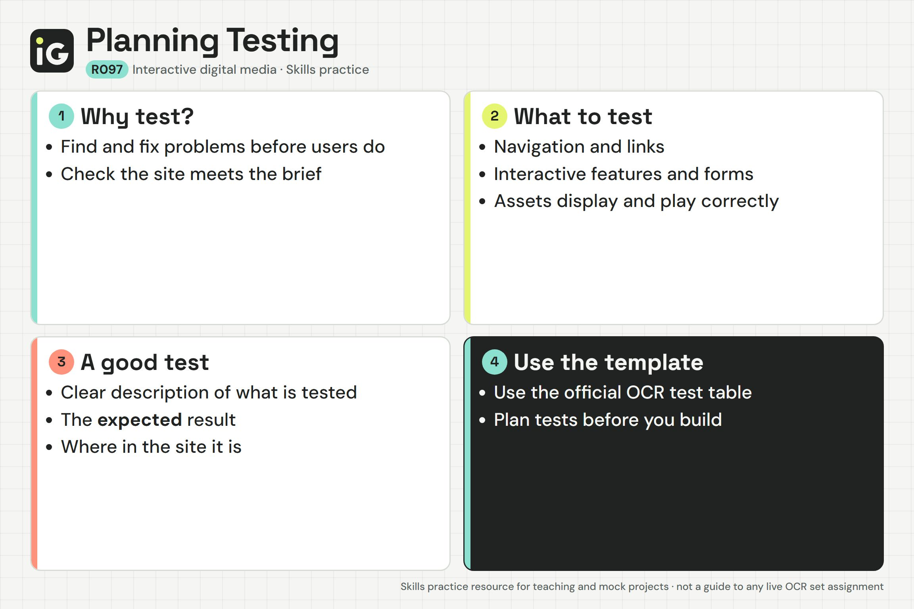

Paths
- Every link and button
- Back/home routes

Decide how you will test/check the website and create a test plan.
At this stage you are planning your testing — you are not testing the finished website yet. A test plan lists what you will check on each page, based on your wireframes.
Your test tables should include clear tests for each page. Think: "What must work on this page?"
A planned test table lists the tests for each page. You will fill in Pass/Fail, comments and re-tests later once the IDMP is completed.
Tip: Start each test with "Check that…" and make it measurable, e.g. "Check that the Quiz Submit button shows a score and feedback" rather than "Quiz works".
Use this checklist to make sure you can cover every part of this topic.
A test plan lists what will be tested, where, and the expected result. Success criteria describe what the finished product must achieve.